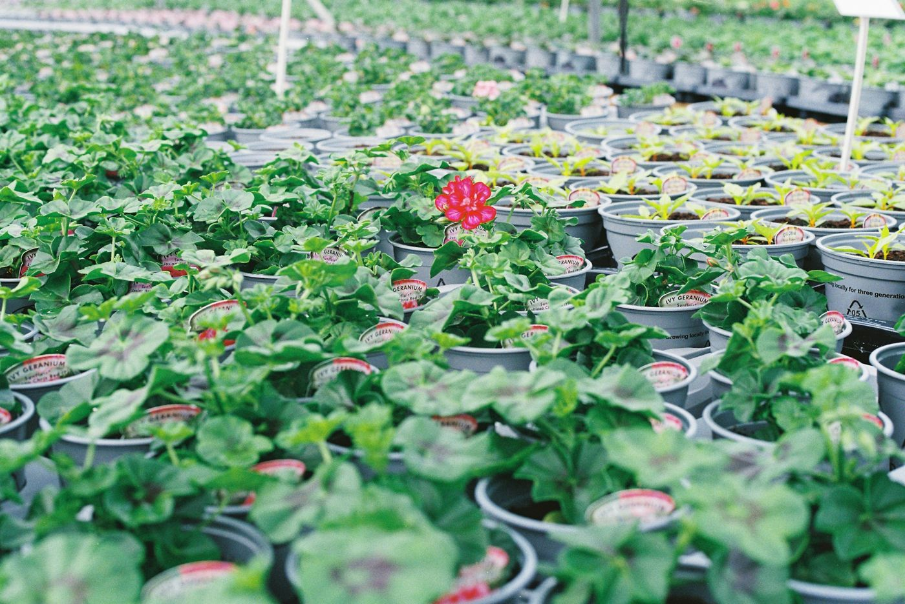
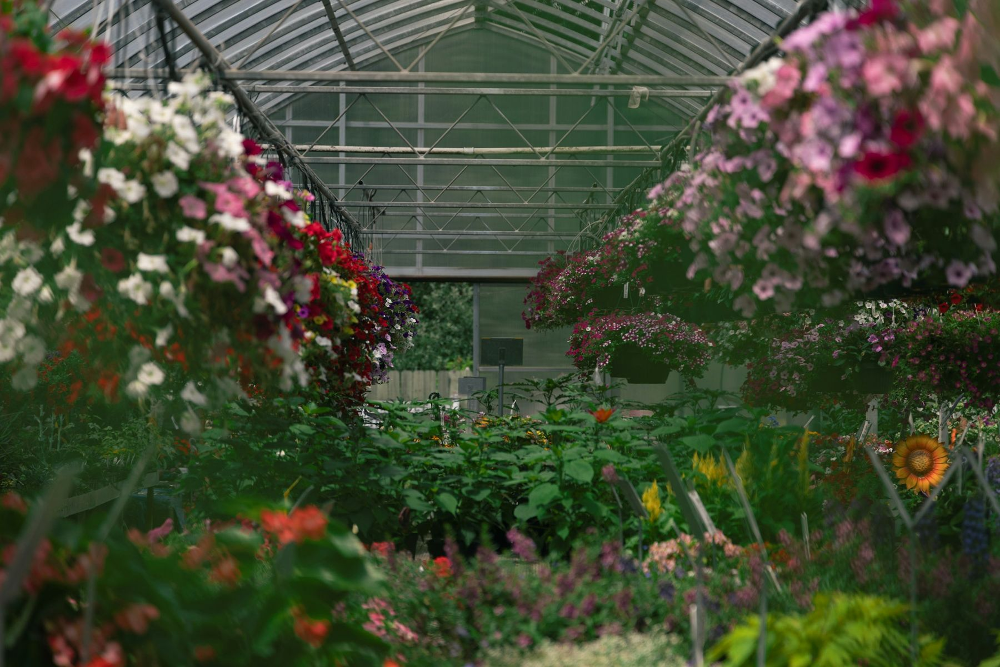
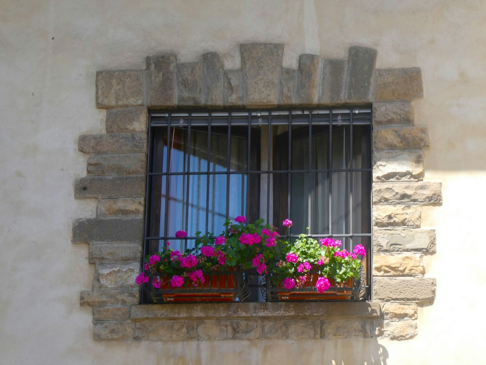
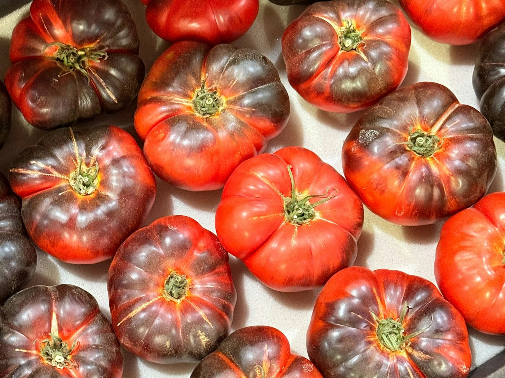
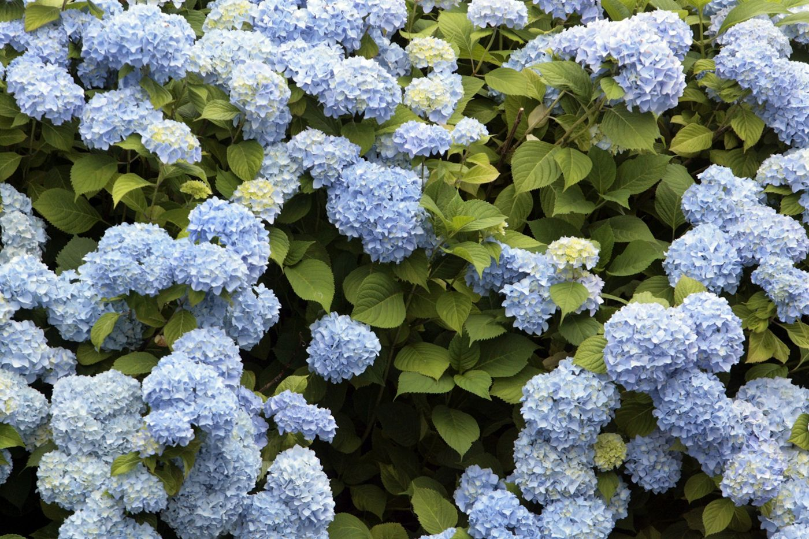
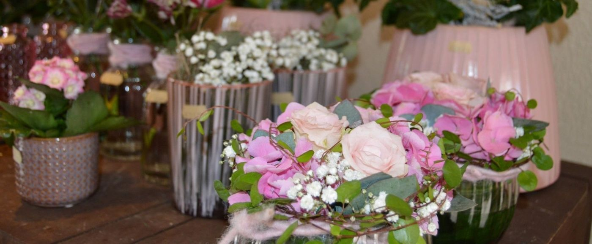

BeispielbildBeet & Balkon
Aus eigener Kultur
Geranien, Petunien und Bacopa in vielen Farben, für Kasten, Kübel und Beet.
Geranienbüsche bis 1,20 m hoch

Rund 200 Sorten Beet- und Balkonpflanzen, Gemüse und Hortensien, gezogen in unseren Gewächshäusern an der Mesumer Straße.
Alles an einem Ort: in der Gärtnerei, Mesumer Straße 78. Unser Blumenladen an der Emsdettener Straße schließt zum 31. Dezember. Die Gärtnerei bleibt für Sie da, mit Parkplätzen direkt auf dem Gelände.

BeispielbildAb Anfang April bepflanzen wir Ihre Balkonkästen und Kübel mit Pflanzen aus unserer eigenen Kultur. Sie sagen uns, wo die Kästen stehen und welche Farben Sie mögen, den Rest machen wir.
Rund 200 Sorten haben wir jedes Jahr in Kultur. Ein paar Dinge, für die man gern zu uns kommt:

BeispielbildGeranien, Petunien und Bacopa in vielen Farben, für Kasten, Kübel und Beet.

BeispielbildNeben den bekannten Sorten: Schokoladentomate, Tigertomate und Ananas-Jumbo.

BeispielbildEin Strauch, der für sich allein wirkt: auf der Terrasse, am Eingang, im Kübel.

Foto: Blumenhaus Gehring-BeckmannSträuße, Gestecke und Deko zur Saison. Bestellen Sie gern vor, am Telefon oder über das Formular.
Sonntag, 10 bis 18 Uhr. Die Eltern der Kita Korallenriff bieten Waffeln und Glühwein an.
Karl Gehring hat 1925 die erste Gärtnerei in Neuenkirchen gegründet. Heute führt Gärtnermeister Helmut Beckmann den Betrieb, unterstützt von seiner Familie.
Karl Gehring gründet die erste Gärtnerei in Neuenkirchen.
Neubau eines Blumenfachgeschäfts im Ortskern.
Gärtnermeister Helmut Beckmann übernimmt den Betrieb.
Rund 200 Sorten in jährlicher Kultur, dazu Bauernhortensien und Geranienbüsche.
Alles an einem Ort: die Gärtnerei an der Mesumer Straße.
Sicher nach den Eisheiligen, also ab Mitte Mai (11. bis 15. Mai). Dann sind Nachtfröste bei uns im Münsterland selten. Wer früher pflanzt, holt die Kästen in kalten Nächten einfach kurz ins Haus.
Als Faustregel vier bis fünf Pflanzen pro Meter Kasten. Aufrechte Sorten nach hinten, hängende nach vorn, dann ist der Kasten schon nach wenigen Wochen dicht.
Ja, gut sogar. Vor dem ersten Frost um etwa die Hälfte zurückschneiden, hell und kühl bei 5 bis 10 °C aufstellen und nur wenig gießen. Im März umtopfen, dann treiben sie kräftig neu aus.
Eine dunkelbraune bis fast schwarze Tomate mit kräftigem, leicht süßem Geschmack. Sie wächst wie jede Stabtomate: sonnig, möglichst regengeschützt, ab Mitte Mai ins Freie.
Nein, aber bei besonderen Sorten und größeren Mengen lohnt es sich. Wählen Sie oben „Pflanzen zurücklegen“, und wir halten sie für Sie bereit.
Parkplätze haben wir direkt auf dem Gelände, Zufahrt von der Mesumer Straße und vom Westfalenring.
| Montag bis Freitag | 8:00 – 18:00 |
| Samstag | 8:30 – 13:00 |
| Sonntag | geschlossen |